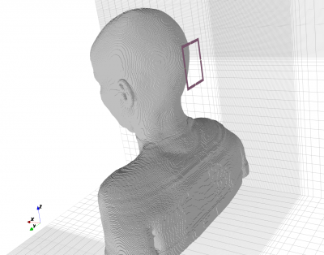
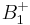
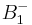
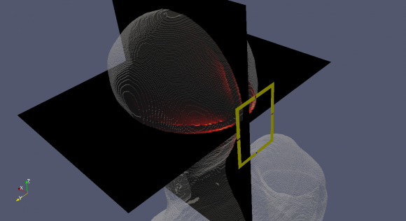
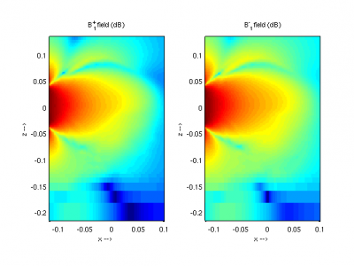
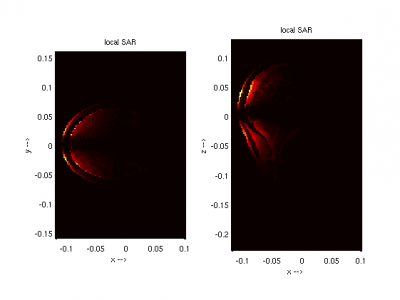

Tutorial: MRI Loop Coil
From openEMS
- Download the latest matlab file using gitweb: MRI_Loop_Coil.m

 MRI Loop Coil and VF human body model
MRI Loop Coil and VF human body model
Contents |
Requirements
- openEMS v0.0.31 or later
- Matlab R2011a or later for converting the body model once! (Octave currently is not supported, see Alternatives below)
- The "Virtual Family Model" [1]: [1] (see Alternatives below)
This tutorial covers
- setup of a MRI Loop Coil for 7T
- Converting and including a Virtual Family Body Model
- adding two SAR dump box planes
- calculate the S-Parameter and input-impedance of the loop coil
- calculate and plot  and 
- calculate and plot the SAR distribution
Alternatives
If you don't have access to Matlab (to convert the body model once) or have no access to the virtual family body models, you may want to replace the discrete material with a simple phantom model:
CSX = AddMaterial(CSX, 'phantom_head');
CSX = SetMaterialProperty( CSX,'phantom_head', 'Epsilon', 60, 'Kappa', 0.7, 'Density', 1040);
CSX = AddSphere(CSX, 'phantom_head', 0, [0 0 0], 110,'Transform',{'Scale',[1 0.8 1]} );
Results
|

|

|

|

|
Literature
- ↑ Christ A, Kainz W, Hahn E G, Honegger K, Zefferer M, Neufeld E, Rascher W, Janka R, Bautz W, Chen J, Kiefer B, Schmitt P, Hollenbach H P, Shen J X, Oberle M,Szczerba D, Kam A, Guag J and Kuster N: The Virtual Family – Development of surfacebased anatomical models of two adults and two children for dosimetric simulations, Phys. Med. Biol. 55 (2010)

{kind=link}
{kind=link}
{kind=link}
{kind=link}